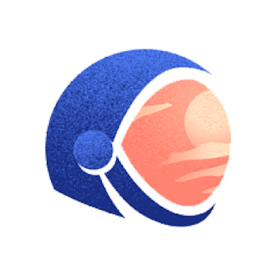
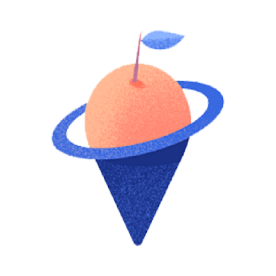
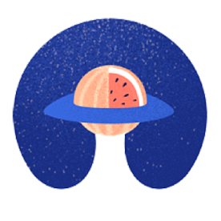

SAD Ecosystem是由Galaxy Digital联合众多国际投资机构共同发起成立。
在未来，SAD Ecosystem致力于构建一个全新的Defi Platform，通过流动池的建设及对 数据的打造，使得SAD成为一种高流动性的并具有升值潜力的数字资产。同时，SAD将传 承共同富裕的文化精神,秉承DAO社区自主共治,并为布道区块链科技创新不遗余力的奉献 与付出，打造最具价值DAO。
关于我们
德胜联盟由64个社区共同宣誓成立，本着完全去中心化的思想指引，在自然意识形态下，具有共识 的人构建全球区块链领域顶级高度共识联盟，共同创造一个高市值的生态。在德胜联盟，所有的数 据权限全部公开透明，让每位用户都可以共享联盟发展的红利。 缘起：始于初心，敬于贡献，臻于高度的DAO自治 • 联盟战略：超强共识、权限公开、数据盈利 • 社交标准：小资金，1:1添加流动性
SAD发展
-

SAD Ecosystem是由Galaxy Digital联 合众多国际投资机构共同发起成立， SAD 通过流动池的建设及对数据的打造， 使得SAD成为一种高流动性的并具有升 值潜力的数字资产，将致力于构建一个全 新的Defi Platform。
-
SAD是Special Activities Division的治理代币，是基于区块链技术打造的DAO生态，作为一种高流动性的数字资产， 为了方便用户交易及提升信任，SAD提供了一个无需信任的去中心化交易服务，交易信息写入BSC币安智能链。随着 SAD Ecosystem的不断壮大，SAD将逐步应用到Gamefi、Swap，NFT，元宇宙及自治社区DAO等生态场景中，使持 有SAD的用户将获得更大的生态红利。而SAD的可持续发展、掌握在每一位SAD持有者手中，在这里，每个人都可以 有所作为，无论能力和经验如
-

闲散资金
轻资产创业是DeFi的初心，以小博大
价值投资
选对社区，德胜联盟，长久规划， 布局未来
长期持有
不断共识和布道，一步步把基础 做扎实，生态价值需要时间来积 累，时间自然也会给我们最好的 财富果实。
联合坐庄
1:1添加LP资金池，联合一切可 以联合的力量 -

第一阶段：
搭建底池和数据
第二阶段：
打造SAD Platform，用SAD做平 台令牌兼容其他经济模型，为更 多用户提供需求和资产保障
第三阶段：
SAD Swap，用户具有上币权并获得SAD的奖励、 可通过无需代码的方式一键部署发行 NFT，并进行出售交易、 可通过Pools池获得Staking奖励、易操作的多链交互协议第四阶段： Metaverse,借以日渐成熟的AR/VR 技术，构建丰富的触感场景
第五阶段：
SAD Ecosystem搭载商用性公 链，完成生态闭环

SAD经济模型
令牌分配，发行量：1314999LP已锁仓40%
销毁: 46.2%
锁仓:
23.4%
生态奖励: 15.2%
流通:
9.9%
风险基金: 5.3%
SAD交易模型
买入税: 2%，回流资金池
卖出税:
3%
①2%营销回流
②1%慈善回流
备注：新地址不接受空投，不接受转账（这会
消耗一些GAS费）所有用户交易行为全在链上
令牌分配，发行量：1314999LP已锁仓40%
销毁: 46.2%
锁仓:
23.4%
生态奖励: 15.2%
流通:
9.9%
风险基金: 5.3%
SAD交易模型
买入税: 2%，回流资金池
卖出税:
3%
①2%营销回流
②1%慈善回流
备注：新地址不接受空投，不接受转账（这会
消耗一些GAS费）所有用户交易行为全在链上
DAO的崛起
自2016年DAO出现以来，去中心化的自治组织已 经偏离了人们的视线，然而，这方面的发展和试 验从未停止。2019年，对DAO的支持趋势越来越 明显。DAO出现的最强烈的信号可能是，我们正 在进入一个“非加密”的世界。 • 例如，总部位于英国的Nexus Mutual是第一家去 中心化的共同保险公司，以合作社的方式运作， 并由DAO驱动。再例如，在法国，La Suite du Monde也计划使用DAO管理其资金和规划。 • 从布拉格到库拉索、雅典和纽约，新的DAO随处 可见，所有这些项目都具有相同的探索和实验精 神，相同的创建更公平系统的希望，相同的去中 心化精神。其目标和运作方式却是非常多样化的， 这就是阐明DAO实际含义的意义所在。
什么是DAO
SAD DAO是一种高度自治的DAO组织，通过数据的打造和对令牌的链上锁定来确保用户的资产安全
DAO是英文Decentralized Autonomous Organization的缩写，是基 于区块链核心思想理念，由 达成同一个共识的群体自发 产生的共创、共建、共治、 共享的协同行为，衍生出来 的一种组织形态。DAO是区 块链解决人与人之间信任问 题之后的附属产物，是人类 协作史上的 一次革命性的进 化，其本质是区块链技术应 用的一种形式。

自治
DAO的运行规则是经过编程的， 这意味着当软件中指定的条件满 足时，程序将自动强制执行。 DAO是自治的，因为它的规则是 自动执行的，没有人能阻止它， 也没有人能从外部改变它。
去中心化
DAO是去中心化的，因为它运行 在去中心化的基础设施上，即一 个公共的、无许可的区块链（公 链），它不能被一个州或其他某 个第三方掌控。同时，它也不是 围绕高管或股东按等级组织的， 也没有将权力集中在他们周围。
组织
DAO通过技术取代管理，按照所 有持有者的投票来执行最终决策。 与任何组织一样，DAO是协调人 类活动的工具。
DeFi金融
德胜联盟由64个社区共同宣誓成立，本着完全去中心化的思想指引，在自然意识形态下，具有共识 的人构建全球区块链领域顶级高度共识联盟，共同创造一个高市值的生态。在德胜联盟，所有的数 据权限全部公开透明，让每位用户都可以共享联盟发展的红利。 缘起：始于初心，敬于贡献，臻于高度的DAO自治 • 联盟战略：超强共识、权限公开、数据盈利 • 社交标准：小资金，1:1添加流动性
生态系统
德胜联盟是一个完整的一体化生态系统，包含多个由智能合约提供支持的数字应用程序。社区成员还参与决策以确保其资产的真正所有权。看看我们计划在发布前后开发什么！
Gamefi 生态
SAD Ecosystem将SAD治理代币运 用到GameFi中，研发并上线具有 DAO治理的游戏，所有玩家可通过质 押治理代币SAD来发起提案或投票， 共同参与GameFi生态建设，共同决 定GameFi生态的未来和方向。 SAD 代币将作为链游生态唯一游戏治理代 币，流动、质押、支付、激励、铸造、 治理于游戏中。
NFT 生态
通过SAD治理代币，SAD Ecosystem将在币安智能链 网络上研发使用NFT进行投票的DAO。因此，每个人都 可以通过SAD 而拥有一个独一无二的用于投票的 NFT。 DAO 不使用代币进行投票，而是使用 NFT。要提交提 案或者对提案进行表决，你需要拥有一个可用于投票的 NFT，超过一定数量的NFT票可以提案，但投票可以选 择任意数量。每个想要投票的人都需要拥有一个代表他 们投票权的 NFT，每个 NFT 都是独一无二的，任何人 都可以在交易市场上通过SAD买卖任何NFT。
NFT 生态
通过SAD治理代币，SAD Ecosystem将在币安智能链 网络上研发使用NFT进行投票的DAO。因此，每个人都 可以通过SAD 而拥有一个独一无二的用于投票的 NFT。 DAO 不使用代币进行投票，而是使用 NFT。要提交提 案或者对提案进行表决，你需要拥有一个可用于投票的 NFT，超过一定数量的NFT票可以提案，但投票可以选 择任意数量。每个想要投票的人都需要拥有一个代表他 们投票权的 NFT，每个 NFT 都是独一无二的，任何人 都可以在交易市场上通过SAD买卖任何NFT。
元宇宙生态
SAD Ecosystem利用VR/AR技术创造一个虚拟和现实完全交融的世界,在这个世界中，完全以人 为中心，不需要你在现实和数字世界之间做出选择，随时随地切换虚拟与现实。支持你超越空间 随意召唤物体和装置，并将你的感知记忆和认知放大到超人般的水平。彻底颠覆人机交互的方式， 完全自然完全根据场景所需，甚至让你感受不到的交互的存在，真正做到随时随地，无处不在。
SWAP聚合交易生态
SAD Ecosystem将打造多生态链聚合平台， 独创了集NFT、链游、通证三者为一体的 新生态，真正实现DAO的理念。在SAD Swap，用户具有上币权并获得SAD的奖励， 可通过无需代码的方式一键部署发行 NFT 并进行出售交易，可通过Pools池获得 Staking奖励，搭载易操作的多链交互协议。
SWAP聚合交易生态
SAD Ecosystem将打造多生态链聚合平台， 独创了集NFT、链游、通证三者为一体的 新生态，真正实现DAO的理念。在SAD Swap，用户具有上币权并获得SAD的奖励， 可通过无需代码的方式一键部署发行 NFT 并进行出售交易，可通过Pools池获得 Staking奖励，搭载易操作的多链交互协议。
用户收益
01
添加流动性分红，每交易一笔2%分红
02
联合坐庄，共识高，有利于价格上涨
03
AMM做市收益
04
LP快照奖励
05
生态奖励
合作伙伴